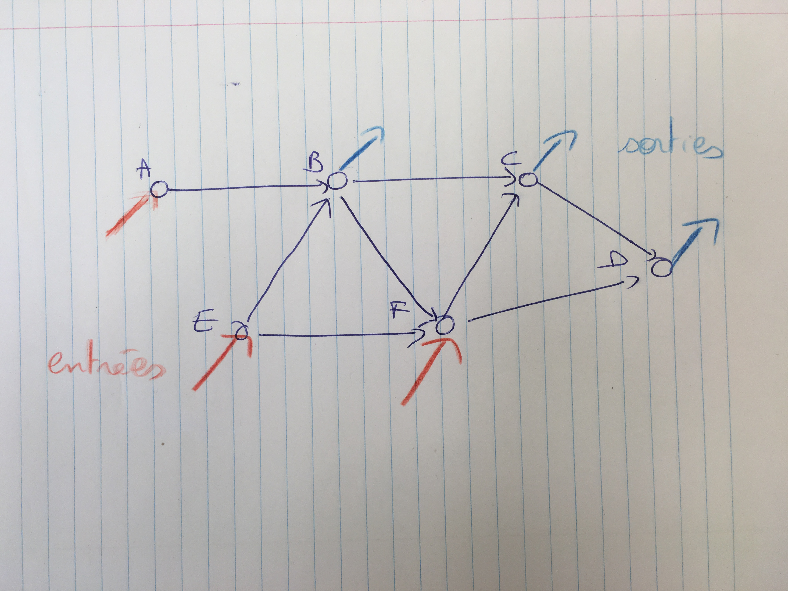

Exemple 2
Dans cet exemple, nous allons dessiner un graphique simple en utilisant TikZ, mais cette fois-ci en commençant par le résultat généré par un agent IA comme ChatGPT. L’image ci-dessous représente l’objectif final que nous souhaitons atteindre.

1 ChatGPT
J’ai demandé à ChatGPT de générer le code TikZ pour dessiner cette image en utilisant le prompt suivant :
“Generate the complete, standalone LaTeX code using the TikZ package that exactly reproduces the attached image. Ensure the code is clean, efficient, and compiles without errors.”
Voici le code TikZ généré par ChatGPT :
\documentclass[border=10pt]{standalone}
\usepackage{tikz}
\usepackage{amsmath}
\usetikzlibrary{arrows.meta,decorations.pathmorphing,decorations.pathreplacing}
% Slightly "sketchy" style: small random perturbations to mimic hand-drawn look
\tikzset{
hand/.style={line width=1.2pt, rounded corners=1pt, decorate, decoration={random steps,segment length=1pt,amplitude=0.2pt}},
node circle/.style={circle, draw=black!80, very thick, inner sep=1.6pt, minimum size=8pt},
thinline/.style={line width=1.0pt},
input arrow/.style={-Latex, line width=3pt, draw=red!75!black, shorten >=1pt},
output arrow/.style={-Latex, line width=3pt, draw=blue!55!black, shorten >=1pt},
normal arrow/.style={-Latex, line width=1.2pt, draw=black!80, shorten >=1pt},
faint/.style={opacity=0.6}
}
\begin{document}
\begin{tikzpicture}[scale=1, every node/.style={font=\small}]
% Coordinates chosen to reproduce relative positions
\coordinate (A) at (-4.2,1.4);
\coordinate (B) at (0,1.4);
\coordinate (C) at (3.8,1.4);
\coordinate (D) at (5.6,0.2); % rightmost exit node
\coordinate (E) at (-1.6,-0.8);
\coordinate (S) at (1.2,-0.6); % central bottom node
% Draw horizontal main line top A-B-C
\draw[hand] ($(A)+(0.25,0)$) -- ($(B)-(0.25,0)$) -- ($(C)-(0.25,0)$);
% Draw horizontal bottom line E -- S
\draw[hand] ($(E)+(0.25,0)$) -- ($(S)-(0.35,0)$);
% Horizontal from S toward D (slanted a bit)
\draw[hand] ($(S)+(0.4,0.05)$) -- ($(D)-(0.6,0.35)$);
% Diagonal connectors to form two triangles (B-S and C-S), and E to B
\draw[hand] ($(B)-(0.05,0.12)$) -- ($(S)+( -0.15,0.15)$); % B -> S
\draw[hand] ($(C)-(0.05,0.12)$) -- ($(S)+(0.10,0.12)$); % C -> S
\draw[hand] ($(E)+(0.14,0.1)$) -- ($(B)-(0.08,0.16)$); % E -> B
% Circle nodes
\node[node circle] (nA) at (A) {};
\node[node circle] (nB) at (B) {};
\node[node circle] (nC) at (C) {};
\node[node circle] (nD) at (D) {};
\node[node circle] (nE) at (E) {};
\node[node circle] (nS) at (S) {};
% Small arrowheads on some connecting lines to indicate direction (like in the photo)
\draw[normal arrow] ($(B)+(-0.08,-0.05)$) -- ($(B)+(0.02,-0.05)$); % small arrow near B pointing rightwards along top
\draw[normal arrow] ($(S)+(-0.06,0.10)$) -- ($(S)+(0.02,0.05)$); % arrow pointing into S (from above-right)
\draw[normal arrow] ($(B)+(-0.02,-0.22)$) -- ($(B)+(-0.02,-0.12)$); % small arrow on B indicating incoming diagonal
\draw[normal arrow] ($(C)+(-0.02,-0.22)$) -- ($(C)+(-0.02,-0.12)$); % small arrow on C indicating incoming diagonal
% Thick colored "input" red brush-stroke arrows (angled) into A, E and S (entrées)
\draw[input arrow] ($(A)+(-0.9,0.6)$) -- ($(A)+(-0.15,0.02)$);
\draw[input arrow] ($(E)+(-0.7,-0.4)$) -- ($(E)+(-0.12,0.06)$);
\draw[input arrow] ($(S)+(-0.1,-0.85)$) -- ($(S)+(-0.02,0.06)$);
% Blue "output" arrows leaving B, C, D and S (sorties)
\draw[output arrow] ($(nB)+(0.18,0.18)$) -- ($(nB)+(0.9,0.9)$); % small slanted up-right
\draw[output arrow] ($(nC)+(0.28,0.18)$) -- ($(nC)+(1.0,0.9)$);
\draw[output arrow] ($(nD)+(0.18,0.22)$) -- ($(nD)+(1.0,1.0)$);
\draw[output arrow] ($(nS)+(0.38,0.20)$) -- ($(nS)+(1.0,0.9)$);
% Node labels (A,B,C,E,S etc) placed like handwriting next to circles
\node[above left=2pt of nA] {\small A};
\node[above=2pt of nB] {\small B};
\node[above=2pt of nC] {\small C};
\node[above right=1pt of nD] {\small D};
\node[above left=2pt of nE] {\small E};
\node[right=2pt of nS] {\small F};
% French group labels similar to the photo
\node[font=\sffamily\large\itshape, red!60!black] at (-3.6,-1.8) {entrées};
\node[font=\sffamily\large\itshape, blue!55!black] at (4.6,1.8) {sorties};
% small decorative little arcs near some nodes to mimic the hand-drawn curls
\draw[faint, hand] ($(nB)+(-0.26,-0.04)$) -- ($(nB)+(-0.06,0.08)$);
\draw[faint, hand] ($(nC)+(-0.25,-0.06)$) -- ($(nC)+(-0.06,0.07)$);
\draw[faint, hand] ($(nS)+(-0.12,0.02)$) -- ($(nS)+(0.04,0.14)$);
\end{tikzpicture}
\end{document}Malheureusement, le code généré par l’agent IA contenait plusieurs erreurs et ne compilait pas correctement. On peut essayer de le fixer en ajoutant manuellement les bibliothèques manquantes et en corrigeant quelques détails mineurs.
\usetikzlibrary{calc}
\usetikzlibrary{positioning}
...
% Draw horizontal main line top A-B
\draw[hand] ($(A)+(0.25,0)$) -- ($(B)-(0.25,0)$);
% Draw horizontal main line B-C
\draw[hand] ($(B)+(0.25,0)$) -- ($(C)-(0.25,0)$);
...Et maintenant, le code compile correctement mais le résultat final n’est toujours pas parfait. Certaines proportions et positions des éléments ne correspondent pas exactement à l’image de référence.

2 Version simple
On peut voir que le code généré par l’agent IA est assez complexe et difficile à ajuster. Parfois, il est plus simple de repartir de zéro en utilisant une approche plus basique.
- Dessiner les nœuds principaux.
\node [circle, draw] (A) at (0, 0) {A};
\node [circle, draw] (B) at (2, 0) {B};
\node [circle, draw] (C) at (4, 0) {C};
\node [circle, draw] (D) at (6, -1) {D};
\node [circle, draw] (E) at (1, -2) {E};
\node [circle, draw] (F) at (3, -2) {F};Ce code place des nœuds simples en cercles à des positions fixes. Le résultat du code est le suivant :
- Connecter les nœuds avec des lignes simples.
\draw[->] (A) -- (B);
\draw[->] (B) -- (C);
\draw[->] (C) -- (D);
\draw[->] (E) -- (F);
\draw[->] (F) -- (D);
\draw[->] (E) -- (B);
\draw[->] (B) -- (F);
\draw[->] (F) -- (C);Ce code ajoute des flèches entre les nœuds pour représenter les connexions. Le résultat du code est le suivant :

- Ajouter les flèches d’entrée et de sortie.
\draw[thick, <-, red] (A) -- ++ (225:1);
\draw[thick, <-, red] (E) -- ++ (225:1) node[left] {entrées};
\draw[thick, <-, red] (F) -- ++ (225:1);
\draw[thick, ->, blue] (B) -- ++ (45:1);
\draw[thick, ->, blue] (C) -- ++ (45:1) node[right] {sorties};
\draw[thick, ->, blue] (D) -- ++ (45:1);\draw[thick, <-, red] (A) -- ++ (225:1);: Cette ligne dessine une flèche rouge épaisse pointant vers le nœud A, indiquant une entrée.++est utilisé pour faire une translation relative à la position actuelle du nœud A et(225:1)spécifie la direction (225 degrés) et la distance (1 unité) de la flèche. Les deux autres lignes similaires font de même pour les nœuds E et F, avec une étiquette “entrées” ajoutée à côté de la flèche pointant vers E.\draw[thick, ->, blue] (B) -- ++ (45:1);: Cette ligne dessine une flèche bleue épaisse partant du nœud B, indiquant une sortie. De même,++ (45:1)spécifie la direction (45 degrés) et la distance (1 unité) de la flèche. Les deux autres lignes similaires font de même pour les nœuds C et D, avec une étiquette “sorties” ajoutée à côté de la flèche partant de C.
Le résultat attendu est le suivant :

En combinant ces étapes, nous obtenons un code TikZ plus simple et plus facile à ajuster pour correspondre à l’image de référence.
\documentclass{standalone}
\usepackage{tikz}
\begin{document}
\begin{tikzpicture}
\node [circle, draw] (A) at (0, 0) {A};
\node [circle, draw] (B) at (2, 0) {B};
\node [circle, draw] (C) at (4, 0) {C};
\node [circle, draw] (D) at (6, -1) {D};
\node [circle, draw] (E) at (1, -2) {E};
\node [circle, draw] (F) at (3, -2) {F};
\draw[->] (A) -- (B);
\draw[->] (B) -- (C);
\draw[->] (C) -- (D);
\draw[->] (E) -- (F);
\draw[->] (F) -- (D);
\draw[->] (E) -- (B);
\draw[->] (B) -- (F);
\draw[->] (F) -- (C);
\draw[thick, <-, red] (A) -- ++ (225:1);
\draw[thick, <-, red] (E) -- ++ (225:1) node[left] {entrées};
\draw[thick, <-, red] (F) -- ++ (225:1);
\draw[thick, ->, blue] (B) -- ++ (45:1);
\draw[thick, ->, blue] (C) -- ++ (45:1) node[right] {sorties};
\draw[thick, ->, blue] (D) -- ++ (45:1);
\end{tikzpicture}
\end{document}3 Version améliorée
Le code ci-dessus produit un graphique fonctionnel, mais il peut être amélioré sur plusieurs aspects:
Mettre les étiquettes des nœuds à côté des cercles au lieu de l’intérieur. Pour cela, nous utilisons l’option
labeldans la définition des nœuds. Par exemple,\node [circle, draw, label=145:A] (A) at (0, 0) {};met l’étiquette “A” à un angle de 145 degrés autour du nœud A.Factoriser les styles pour les nœuds et les flèches. On définit des styles TikZ personnalisés pour les nœuds et les flèches afin de rendre le code plus propre et plus facile à modifier:
\tikzset{
node circle/.style={
circle,
draw=black!80,
very thick,
inner sep=1pt,
minimum size=4pt
},
edge arrow/.style={
->,
line width=1.2pt,
draw=black!80,
shorten >=1pt
},
input arrow/.style={
<-,
line width=1.5pt,
draw=red!75!black,
shorten <=1pt
},
output arrow/.style={
->,
line width=1.5pt,
draw=blue!55!black,
shorten >=1pt
}
}Dans ce code, nous définissons quatre styles : node circle pour les nœuds, edge arrow pour les flèches qui connectent les nœuds, input arrow pour les flèches d’entrée rouges, et output arrow pour les flèches de sortie bleues.
- Factoriser les positions des nœuds pour un ajustement plus facile. Nous pouvons définir des variables pour les coordonnées de chaque nœud, ce qui facilitera leur repositionnement ultérieur. On utilise des définitions comme
\def\unitheight{1.25}et\def\unitwidth{1.5}pour contrôler les espacements verticaux et horizontaux entre les nœuds. On peut ensuite positionner les nœuds en fonction de ces unités. D’autre part, on définit des variables pour les angles et les distances des flèches d’entrée et de sortie\def\inputangle{225}et\def\inputradius{1}pour les flèches d’entrée, et\def\outputangle{45}et\def\outputradius{1}pour les flèches de sortie.
Voici une version améliorée du code :
\documentclass{standalone}
\usepackage{tikz}
\begin{document}
\tikzset{
node circle/.style={
circle,
draw=black!80,
very thick,
inner sep=1pt,
minimum size=4pt
},
edge arrow/.style={
->,
line width=1.2pt,
draw=black!80,
shorten >=1pt
},
input arrow/.style={
<-,
line width=1.5pt,
draw=red!75!black,
shorten <=1pt
},
output arrow/.style={
->,
line width=1.5pt,
draw=blue!55!black,
shorten >=1pt
}
}
\begin{tikzpicture}
\def\unitheight{1.25}
\def\unitwidth{1.5}
\def\inputangle{225}
\def\inputradius{1}
\def\outputangle{45}
\def\outputradius{1}
\node [node circle, label=145:A] (A) at (0, 0) {};
\node [node circle, label=100:B] (B) at (2 * \unitwidth, 0) {};
\node [node circle, label=100:C] (C) at (4 * \unitwidth, 0) {};
\node [node circle, label=0:D] (D) at (6 * \unitwidth, -1 * \unitheight) {};
\node [node circle, label=170:E] (E) at (1 * \unitwidth, -2 * \unitheight) {};
\node [node circle, label=280:F] (F) at (3 * \unitwidth, -2 * \unitheight) {};
\draw [edge arrow] (A) -- (B);
\draw [edge arrow] (B) -- (C);
\draw [edge arrow] (C) -- (D);
\draw [edge arrow] (E) -- (F);
\draw [edge arrow] (F) -- (D);
\draw [edge arrow] (E) -- (B);
\draw [edge arrow] (B) -- (F);
\draw [edge arrow] (F) -- (C);
\draw[input arrow] (A) -- ++ (\inputangle:\inputradius);
\draw[input arrow] (E) -- ++ (\inputangle:\inputradius) node[left] {entrées};
\draw[input arrow] (F) -- ++ (\inputangle:\inputradius);
\draw[output arrow] (B) -- ++ (\outputangle:\outputradius);
\draw[output arrow] (C) -- ++ (\outputangle:\outputradius) node[right] {sorties};
\draw[output arrow] (D) -- ++ (\outputangle:\outputradius);
\end{tikzpicture}
\end{document}Le résultat obtenu du code amélioré est le suivant :

4 Version avancée
On peut encore améliorer le code en utilisant des boucles pour dessiner les nœuds et les flèches, ce qui rend le code plus compact et plus facile à modifier.
\documentclass{standalone}
\usepackage{tikz}
\begin{document}
\tikzset{
node circle/.style={
circle,
draw=black!80,
very thick,
inner sep=1pt,
minimum size=4pt
},
edge arrow/.style={
->,
line width=1.2pt,
draw=black!80,
shorten >=1pt
},
input arrow/.style={
<-,
line width=1.5pt,
draw=red!75!black,
shorten <=1pt
},
output arrow/.style={
->,
line width=1.5pt,
draw=blue!55!black,
shorten >=1pt
}
}
\begin{tikzpicture}
\def\unitheight{1.25}
\def\unitwidth{1.5}
\def\inputangle{225}
\def\inputradius{1}
\def\outputangle{45}
\def\outputradius{1}
\foreach \nodelabel/\labelangle/\nodex/\nodey in {
A/145/0/0,
B/100/2/0,
C/100/4/0,
D/0/6/-1,
E/170/1/-2,
F/280/3/-2%
} {
\node [
node circle,
label=\labelangle:\nodelabel
] (\nodelabel) at (\nodex * \unitwidth, \nodey * \unitheight) {};
}
\foreach \startnode/\endnode in {
A/B,
B/C,
C/D,
E/F,
F/D,
E/B,
B/F,
F/C%
} {
\draw [edge arrow] (\startnode) -- (\endnode);
}
\foreach \nodelabel in {A, E, F} {
\draw [input arrow] (\nodelabel) -- ++ (\inputangle:\inputradius);
}
\foreach \nodelabel in {B, C, D} {
\draw [output arrow] (\nodelabel) -- ++ (\outputangle:\outputradius);
}
\path (E) ++ (\inputangle:\inputradius) node[left, red] {entrées};
\path (C) ++ (\outputangle:\outputradius) node[right, blue] {sorties};
\end{tikzpicture}
\end{document}Le résultat final est le même que précédemment, mais le code est plus compact et plus facile à modifier grâce à l’utilisation de boucles \foreach.